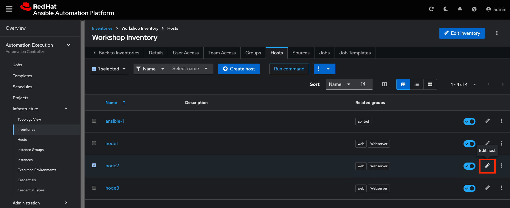
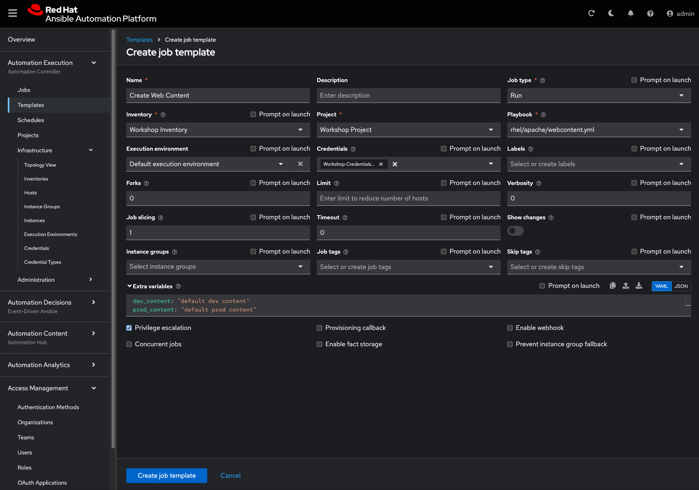

7 - AAP Wrap up
Objective
This is the final challenge where we try to put most of what you have learned together.
Guide
Let’s set the stage
Your operations team and your application development team likes what they see in Ansible automation controller. To really use it in their environment they put together these requirements:
-
All webserver hosts (
node1,node2andnode3) should go in one group -
As the webserver hosts can be used for development purposes or in production, there has to be a way to flag them accordingly as "stage dev" or "stage prod".
- Currently
node1andnode3are used as a development system andnode2is in production.
- Currently
-
Of course the content of the world famous application "index.html" will be different between dev and prod stages.
- There should be a title on the page stating the environment
- There should be a content field
-
The content writer
wwebshould have access to a survey to change the content for dev and prod servers.
The Git Repository
All code is already in place - this is a automation controller lab after all. Check out the Workshop Project git repository at https://github.com/ansible/workshop-examples. There you will find the playbook webcontent.yml, which calls the role role_webcontent.
Compared to the previous Apache installation role there is a major difference: there are now multiple versions of an index.html template, and a task deploying the template file, which has a variable as part of the source file name.
For the development servers the file is named dev_index.html.j2 with the following content:
For the production servers the file is named prod_index.html.j2 with the following content:
The playbook main.yml deploys the template:
[...]
- name: Deploy index.html from template
template:
src: "{{ stage }}_index.html.j2"
dest: /var/www/html/index.html
notify: apache-restart
Prepare Inventory
There is of course more then one way to accomplish this, but for the purposes of this lab, we will use Ansible automation controller.
Navigate to Automation Execution → Infrastructure → Inventories. Select 'Workshop Inventory' and complete the following:
- Go to the Groups tab, click Create group, and create a new group labeled Webserver. Click Create group.
- In the Webserver group, click Edit group and define the following variable:
Within the Details tab of the Webserver inventory, click the Hosts tab, click the Add existing host button. Select node1, node2, node3 as the hosts to be part of the Webserver inventory.
Within Automation Execution → Infrastructure → Inventories, select the Workshop Inventory. Click on the Hosts tab and click on node2. Click on Edit and add the stage: prod variable in the Variables window. This overrides the inventory variable due to order of operations of how the variables are accessed during playbook execution.
Within the Variables textbox define a variable labeled stage with the value of prod and click Save host.

Create the Template
Within Automation Execution → Templates, select the Create template button and Create job template as follows:
| Parameter | Value |
|---|---|
| Name | Create Web Content |
| Job Type | Run |
| Inventory | Workshop Inventory |
| Project | Workshop Project |
| Execution Environment | Default execution environment |
| Playbook | rhel/apache/webcontent.yml |
| Credentials | Workshop Credential |
| Limit | web |
| Variables | dev_content: "default dev content", prod_content: "default prod content" |
| Options | Privilege Escalation |
Click Create job template.

Run the template by clicking the Launch button.
Check the Results
This time we use the power of Ansible to check the results: execute uri to get the web content from each node, orchestrated by an Ansible playbook labeled check_url.yml
Tip
We are using the ansible_host variable in the URL to access every node in the inventory group.
---
- name: Check URL results
hosts: web
tasks:
- name: Check that you can connect (GET) to a page and it returns a status 200
ansible.builtin.uri:
url: "http://{{ ansible_host }}"
return_content: true
register: uri_output
- name: Output result
ansible.builtin.debug:
msg: "{{ uri_output.content }}"
Execute the playbook:
Snippet of output:
TASK [debug] *******************************************************************
ok: [node1] => {
"uri_output.content": "<body>\n<h1>This is a development webserver, have fun!</h1>\ndev wweb</body>\n"
}
ok: [node2] => {
"uri_output.content": "<body>\n<h1>This is a production webserver, take care!</h1>\nprod wweb</body>\n"
}
ok: [node3] => {
"uri_output.content": "<body>\n<h1>This is a development webserver, have fun!</h1>\ndev wweb</body>\n"
}
Add Survey
- Add a Survey to the template to allow changing the variables
dev_contentandprod_content. - In the Template, click the Survey tab and click the Create survey question button.
- Fill out the following information:
| Parameter | Value |
|---|---|
| Question | What should the value of dev_content be? |
| Answer Variable Name | dev_content |
| Answer Type | Text |
- Click Create survey question
In the same fashion add a second Survey Question
| Parameter | Value |
|---|---|
| Question | What should the value of prod_content be? |
| Answer Variable Name | prod_content |
| Answer Type | Text |
- Click Create survey question
-
Click the toggle Survey disabled to enable the Survey questions.
-
Add permissions to the team
Web Contentso the template Create Web Content can be executed bywweb. - Within the Automation Execution -> Templates, click Create Web Content select the User Access tab and Add roles to add the user
wwebthe ability to execute the template.- Select user(s) -> select the checkbox
wweb, click Next. - Select roles to apply -> select the checkbox JobTemplate Execute and click Next.
- Review -> click Finish.
- Select user(s) -> select the checkbox
- Run the survey as user
wweb- Logout of the user
adminof your Ansible automation controller. - Login as
wweband go to Automation execution -> Templates and run the Create Web Content template.
- Logout of the user
Check the results again from your automation controller host. We will use the dedicated uri module within an Ansible playbook. As arguments it needs the actual URL and a flag to output the body in the results.
Solution
Warning
No solution this time 
You have done all the required configuration steps in the lab already. If unsure, just refer back to the respective chapters.